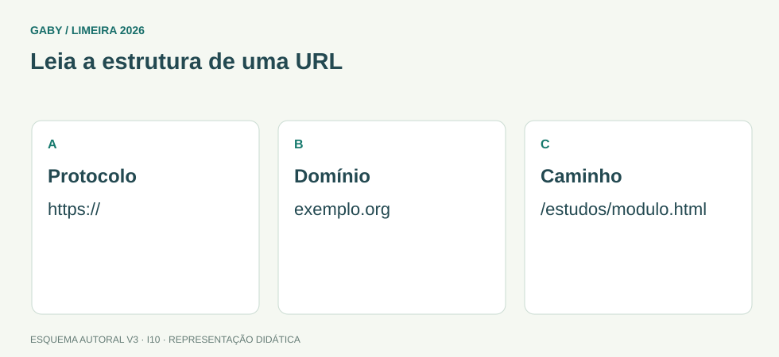

Objetivos do módulo
- Entender campos de e-mail e anexos.
- Interpretar estrutura básica de URL e link.
- Aplicar boas práticas de busca e segurança.
Leia a estrutura de uma URL

Descrição em texto do esquema
- Protocolo: https://
- Domínio: exemplo.org
- Caminho: /estudos/modulo.html
Oficina visual · aplique o esquema
Em https://escola.exemplo.org/matricula, identifique protocolo, domínio completo e caminho.
Atividade autoral complementar da V3. Registre sua resposta; a resolução está no arquivo de gabarito e revisão.
1. E-mail: Para, Cc e Cco
Para indica destinatários principais; Cc envia cópia visível; Cco envia cópia oculta aos demais destinatários. Responder a todos inclui participantes conforme configuração e deve ser usado com cuidado.
2. Anexos
Anexo é arquivo enviado junto à mensagem. Tamanho pode ser limitado pelo serviço. Links de compartilhamento em nuvem não são tecnicamente o mesmo que anexar os bytes do arquivo, embora cumpram finalidade semelhante.
3. URL e link
URL identifica um recurso. Ex.: https://exemplo.com/pasta/pagina. “https” é esquema/protocolo; “exemplo.com” é domínio/host; o restante é caminho. Link é elemento clicável que aponta para um endereço/recurso.
4. Busca
Consultas mais específicas reduzem ruído. Aspas em muitos buscadores podem pesquisar expressão exata; operadores e filtros variam. Sempre avalie fonte, data e autenticidade.
5. Segurança e impressão
Desconfie de anexos inesperados, domínios parecidos e pedidos urgentes de senha. HTTPS protege a conexão, mas não garante que o site seja legítimo. Navegadores permitem imprimir/salvar página em PDF, conforme sistema.
Exemplos resolvidos passo a passo
Exemplo 1
Situação: Você precisa mandar cópia sem revelar o endereço desse destinatário aos demais.
Exemplo 2
Situação: URL https://prefeitura.exemplo.gov.br/concursos. Qual é o esquema?
Exemplo 3
Situação: Site usa HTTPS. Isso prova que é oficial?
Pegadinhas e erros frequentes
- Usar Cc quando deveria preservar endereços com Cco.
- Achar que link e anexo são a mesma coisa.
- Confiar em site só porque tem cadeado/HTTPS.
- Abrir anexo inesperado sem validar remetente.
Resumo de prova
- Cc é visível; Cco oculta destinatário.
- Anexo é arquivo ligado à mensagem.
- URL identifica recurso; link aponta para recurso.
- HTTPS não prova legitimidade do conteúdo.
- Busca exige avaliação da fonte.
Exercícios do módulo
Resolva sem consultar o arquivo de gabarito. As questões são autorais e construídas para treinar os conceitos do edital.
- correio offline
- cópia oculta
- cópia obrigatória
- conta corporativa
- mostra destinatários em cópia
- oculta todos
- anexa arquivo
- criptografa disco
- endereço de e-mail
- assunto
- senha
- arquivo enviado com a mensagem
- caminho
- extensão
- esquema/protocolo
- domínio
- assunto
- domínio/host
- protocolo
- arquivo local
- elemento que aponta para um recurso/endereço
- sempre vírus
- anexo físico
- senha
- sim, sempre
- somente no Brasil
- somente em governo
- não
- informar senha por e-mail
- ignorar remetente
- verificar domínio e contexto
- clicar sempre em urgências
- imprime
- envia resposta aos participantes incluídos conforme cabeçalhos
- apaga mensagem
- oculta remetente
- reduzir resultados irrelevantes
- desligar internet
- garantir verdade
- eliminar necessidade de fonte
Quando terminar, abra Informática 10 - E-mail, Internet, URL, Links e Busca - Gabarito e Revisão.
Checklist de domínio
- ☐ Entender campos de e-mail e anexos.
- ☐ Interpretar estrutura básica de URL e link.
- ☐ Aplicar boas práticas de busca e segurança.
Meta do módulo: 80% ou mais nas questões, sem depender de consulta.
Referências e conteúdos auxiliares
- CERT.br — Phishing e outros golpesLeitura complementar sobre links, mensagens e verificação de endereços.
Referências externas de apoio consultadas para a V3 em 27/09/2026. A origem das questões é o material autoral do projeto; estes links não indicam que uma instituição publicou ou validou os exercícios. As páginas externas precisam de internet. Em informática, confira a versão do programa; em legislação, observe o recorte e as regras de atualização do edital.